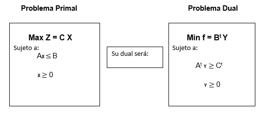
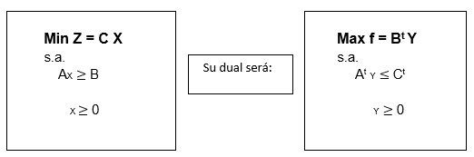
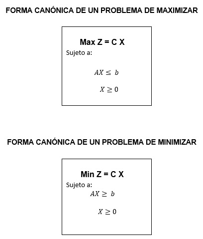

3.1.1 Las relaciones entre el problema primal y el problema dual
Existe una asociación entre un problema de Programación Lineal con otro problema de Programación Lineal llamado dual. Está relación es muy útil, porque en la realidad, la solución óptima del problema dual es la que proporciona los precios sombra que se verán más adelante. Entonces se puede decir que, si el primal es un problema de maximización, entonces su dual será un problema de minimización, y viceversa [1].
Para determinar el dual de un problema de maximización se requiere que todas las variables sean no negativas y todas las restricciones sean ≤ (llamado problema de maximización normal). Un problema de este tipo se puede escribir de la manera siguiente:

Elaboración propia
Para determinar el dual de un problema de minimización se requiere que todas las variables sean no negativas y todas las restricciones sean ≥ (llamado problema de minimización normal). Un problema de este tipo se puede escribir de la manera siguiente:

Elaboración propia
El problema dual tanto de maximización como de minimización se obtiene al estar el problema primal en su forma canónica. Como se puede observar, las formas canónicas no se tiene restricción con respecto al vector de recursos (B), es decir, los elementos de la matriz pueden ser negativos o positivos, en la forma canónica lo único que interesa es que los todos los signos sean ≤ o ≥ según sea el caso [2].

Elaboración propia
Los problemas duales permiten también:
- Solucionar problemas lineales que tienen más restricciones que actividades. Al aplicarse la dualidad a un problema primario donde m>n, se obtiene otro problema lineal donde el numera de filas n es menor al número de columnas m.
- Interpretar económicamente las soluciones óptimas de problemas de programación lineal.
- Proporciona soluciones a problemas de redes de optimización, mediante la generación de nuevos algoritmos.
- Generar métodos como el dual simplex para el análisis de sensibilidad de los programas de programación lineal [3].
Para la transformación de un problema primal a dual se siguen los siguientes pasos
1. Si el primal es un problema de maximización, su dual será un problema de minimización y viceversa.
2. Los coeficientes de la función objetivo del primal se convierten en los coeficientes del vector de disponibilidad en el problema dual.
3. Los coeficientes del vector de disponibilidad del problema original se convierten en los coeficientes de la función objetivo (vector de costo o precio) en el problema dual.
4. Los coeficientes de las restricciones en el problema primal, será la matriz de los coeficientes tecnológicos en el dual.
5. Los signos de desigualdad del problema dual son contrarios a los del primal.
6. Cada restricción en un problema corresponde a una variable en el otro problema. Si el primal tiene m restricciones y n variables, el dual tendrá n restricciones y m variables. Así las variables Xn del primal se convierte en nuevas variables Ym en el dual.